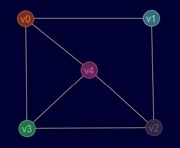
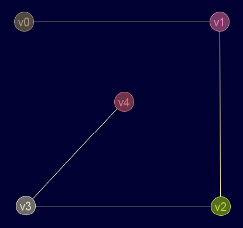

(BEP/DFS)VolverDescripción
Búsqueda en profundidad
Cadena de entrada
gr_bep
Cadena de salida
GRAFO.bep
Uso
gr_bep(<grafo>,<nodo_inicial>)
| Parámetros | |||
|---|---|---|---|
| # | Parámetro | Descripción | Valor por defecto |
| 1 | grafo | Diccionario válido de grafo | |
| 2 | nodo_inicial | Nodo desde el que se inicia la búsqueda | |
Ejemplos
gr_nuevo([[0,1,0,1,1],[1,0,1,0,0],[0,1,0,1,1],[1,0,1,0,1],[1,0,1,1,0]],falso)
Salida en JMEScriptGUI con visor de grafos v0.1:

gr_bep(gr_nuevo([[0,1,0,1,1],[1,0,1,0,0],[0,1,0,1,1],[1,0,1,0,1],[1,0,1,1,0]],falso),0)
Salida en JMEScriptGUI con visor de grafos v0.1:

Véase también…
Desde / Última modificación
v0.6.2.0